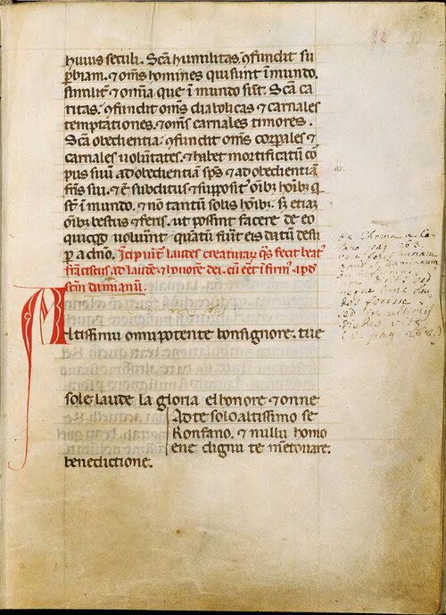

Altissimu, onnipotente, bon Signore, tue so' le laude, la gloria e l'honore et onne benedictione.
Ad te solo, Altissimu, se konfàno et nullu homo ène dignu te mentovare.
Laudato sie, mi' Signore,
cum tucte le tue creature, spetialmente messor lo frate sole, lo qual è iorno, et allumini noi per lui;
et ellu è bellu e radiante cum grande splendore: de te, Altissimo, porta significatione.
Laudato si', mi' Signore,
per sora luna e le stelle: in celu l'ài formate clarite et pretiose et belle.
Laudato si', mi' Signore,
per frate vento et
per aere
et nubilo
et sereno
et onne tempo,
per lo quale a le tue creature dài sustentamento.
Laudato si', mi' Signore,
per sor'aqua, la quale è multo
utile
et humile
et pretiosa
et casta.
Laudato si', mi' Signore,
per frate focu, per lo quale ennallumini la nocte, et ello è
bello
et iocundo
et robustoso
et forte.
Laudato si', mi' Signore,
per sora nostra matre terra, la quale ne sustenta et governa,
et produce diversi fructi
con coloriti flori
et herba.
Laudato si', mi' Signore,
per quelli ke perdonano per lo tuo amore, et sostengo infirmitate et tribulatione.
Beati quelli che 'l sosterrano in pace, ca da te, Altissimo, sirano incoronati.
Laudato si', mi' Signore,
per sora nostra morte corporale, da la quale nullu homo vivente pò scappare:
guai a quelli che morrano ne le peccata mortali.
Beati quelli che trovarà ne le tue santissime voluntati,
ka la morte secunda no 'l farrà male.
Laudate et benedicete mi' Signore
et ringratiate et serviateli cum grande humilitate.